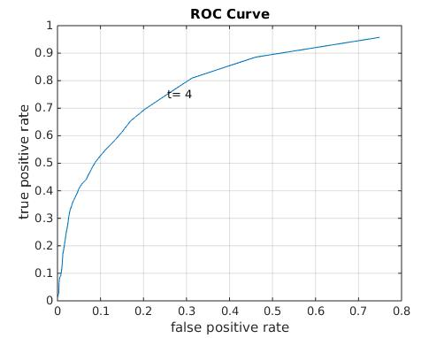

1. Trained with data size 3000, 12D input, using RBF (Gurls).
2. Used 5 different Regression models (for mu, mv, siguu, sigvv, siguv)
3. Of those 3000 data, I included 500 data as stabilization data. (Stabilization of the eye hand head motion of the icub). Below I have included a sample youtube video of the data I used.
4. After including the stabilization, I found the spikes (all or most of the keypoints detected as annomaly) have reduced.
5. I have included the ROC curve below.
6. I had tough time doing the annotion for the real time image sequence, so I did this offline.
7. I used LabelMe to do the annotation. I have included the annotation also in the results.
8. The reason why I went with LabelMe instead of MTA tool is that the tool was expecting for a video sequence instead of image frames. I didnt know how to alter this to load the images from a folder, so that I annotate all the images.
Training Data Sample - Stabilization in random direction
5. Histogram of only the anomaly points masked over the Disparity image
6. The ROC curve is shown below
ROC Curve

Frame number :
Please use the Left and Right Arrow key on your keyboard to navigate.
Browse through the images with the navigation buttons. To straight away go to a specific frame, enter the frame number (1-419) and press the next button.